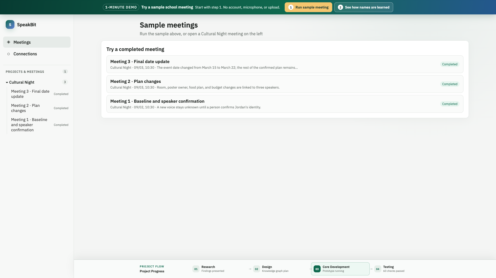

The cafeteria is booked. Let’s use the auditorium.
食堂已被预订，我们用礼堂吧。EXTRA DEMONSTRATION LAYER
See what happens before, during, and after a meeting.
Move through seven short steps. You can also replay a made-up Cultural Night recording and watch each processing stage advance with the audio.
This guide is not part of the product interface. The full demo stays clean and opens separately.
INTERACTIVE REPLAY
Play the recording and watch the work happen
Audio→
Transcript→
Translation→
Speaker→
Notes
Jordan can make the posters, and we should use packaged food.
Jordan 可以制作海报，食物只使用包装食品。I will update the floor plan for the auditorium.
我会更新礼堂平面图。The new budget is two hundred eighty dollars.
新预算是 280 美元。I will confirm everything in the final checklist.
我会在最终清单中确认全部内容。
PRODUCT SCREENMeeting home
STEP 1 · BEGIN
Start from the meeting home
The student sees recent Cultural Night meetings and chooses where to begin.
Look for: the sample meetings and their completion status.
CLEAR SEPARATION
The lesson stays outside the product.
Step numbers, explanations, playback teaching controls, and Previous/Next navigation.
Only the SpeakBit meeting interface and its normal meeting actions.
Open the clean demo →